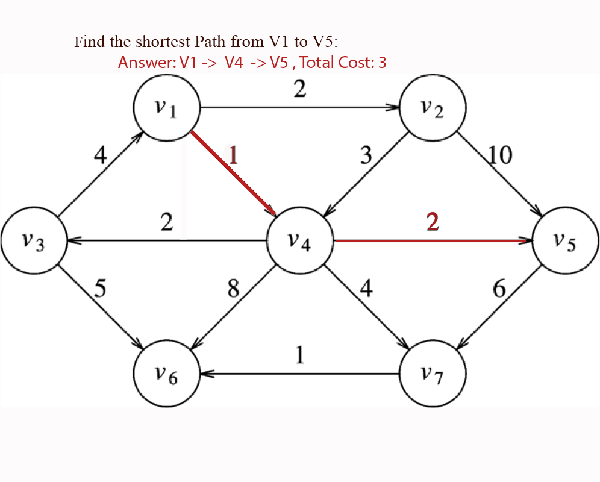
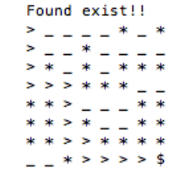
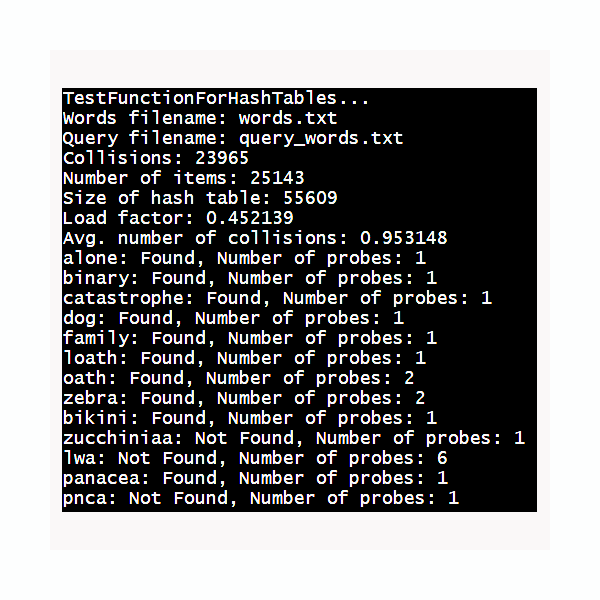

Jinxiu Liu
Go to My LinkeIn
About Me
Hello, everyone, my name is Jinxiu Liu. I am currently a Junior at CUNY Hunter College. I study computer science, with a minor in Economics, and I am interested in font-end, software development, and data analysis. Currently, I am in CTP program (CUNY Tech Prep), a full stack JavaScript training program
I live in Queens with my parents and siblings. In my family, I am the youngest member. I have a twin brother, who is 10 minutes older than me, and I have a sister, who is a year older than me.
When I am free, I like to play badminton and go to Udemy to explore new coding systems.
My Projects:
| Projects: | Description: | Image: | Get more information on Github: |
|---|---|---|---|
| 1. Shortest Path | Find the shorest path from vertex A to Vertex B using binary heap and Dijkstra's Algorithm |  | Shortest Path |
| 2. MazeSolver | Solve different mazes using backtracking |  | MazeSolver |
| 3. Spelling Check | Determine whether the words provided by user existed in dictionary using hashing (hash table) |  | Spelling check |
My interests outside of programming:
- Play Badminton:
- Play Games:
- Cook:

| My Games | Images |
|---|---|
| Cake Mania |  |
| Shadow Fight |  |
| Name | Image | Receipes |
|---|---|---|
| Grilled-Steak |  |
29 different steak recipes |
| Suan Cai Yu (Sichuan Fish with Pickled Mustard Greens) |  |
Suan Cai Yu Recipes |